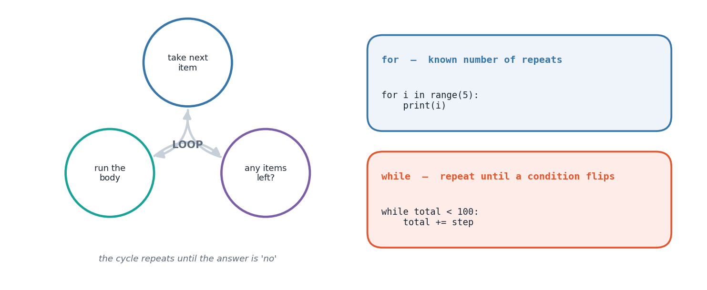

The big idea
Loops are where programming starts to pay for itself. Printing a multiplication table by hand takes
ten print statements; a loop does it in two lines and works for any number you give it.
Python offers two loop keywords, and choosing between them is almost always obvious once you ask one question: do I know in advance how many times this repeats?
If yes — you are walking through a list, counting to ten, processing each character of a string — use
for. Python's for is a for-each loop: it hands you the items themselves, not index numbers.
If no — you are repeating until a total exceeds a limit, until input is valid, until a search
succeeds — use while. A while loop keeps going as long as its condition holds, which means
you are responsible for making sure the condition eventually becomes false.
This chapter also introduces a genuinely important idea: the same problem can be solved by algorithms of very different quality. Testing whether a number is prime by dividing by every smaller number works, but stopping at the square root does the same job far faster. Generating all primes up to a limit is faster still with a sieve, which flips the question from "is this prime?" to "cross out everything that isn't". Same output, different thinking.

How it works
The anatomy of a for loop
for item in collection:
do_something(item)
range() is the standard way to loop a fixed number of times. range(2, 10, 3) produces 2, 5, 8 —
start, stop (exclusive), step. The stop value being excluded is deliberate: range(n) gives you
exactly n values, and range(len(x)) covers every valid index.
Controlling a loop from inside
| Keyword | Effect |
|---|---|
break |
leave the loop immediately |
continue |
skip to the next iteration |
else |
runs only if the loop finished without break |
break is what makes the primality test efficient — the moment a divisor is found, there is no reason
to keep looking.
Accumulator patterns
Most loop problems are one of a few shapes:
- Running total — start at
0, add each item (digit sums) - Running product — start at
1, multiply each item (factorials) - Building a list — start empty,
appendmatches (filtering) - Rolling pair — keep the last two values (
a, b = b, a + bfor Fibonacci)
Recognising which shape a problem is halves the work of writing it.
Sieve thinking
The Sieve of Eratosthenes is over two thousand years old and still the standard way to list primes. Rather than testing each number, assume every number is prime, then walk through and cross out every multiple of each prime you find. What survives is the answer.
The tasks
Everything above was theory. What follows is the lab work — each task stated, explained, then solved with code that really ran.
Task 1
Task 1 — Factorial via a Running Product
target = 7 running_product = 1 for step in range(2, target + 1): running_product *= step print(f"{target}! = {running_product}")
7! = 5040
Task 2
Task 2 — Armstrong Number Check
A number is Armstrong if the sum of its digits, each raised to the power of the digit count, equals the number itself (e.g. 153 = 1^3+5^3+3^3).
candidate = 371 digits = [int(d) for d in str(candidate)] power = len(digits) digit_power_sum = sum(d ** power for d in digits) print(f"{candidate} -> digit-power sum = {digit_power_sum}") print("Armstrong number!" if digit_power_sum == candidate else "Not an Armstrong number.")
371 -> digit-power sum = 371 Armstrong number!
Task 3
Task 3 — Fibonacci Series, N Terms
Built with a while loop this time, generating terms into a list before
printing them together.
num_terms = 12 fib_series = [] a, b = 0, 1 while len(fib_series) < num_terms: fib_series.append(a) a, b = b, a + b print("Fibonacci series:", *fib_series)
Fibonacci series: 0 1 1 2 3 5 8 13 21 34 55 89
Task 4
Task 4 — Primality Test
Trial division only needs to go up to the square root of the number.
possible_prime = 97 if possible_prime < 2: verdict = "is not prime" else: verdict = "is prime" for divisor in range(2, int(possible_prime ** 0.5) + 1): if possible_prime % divisor == 0: verdict = "is not prime" break print(possible_prime, verdict)
97 is prime
Task 5
Task 5 — Palindrome Number Check
num_to_check = 75457 digits_str = str(num_to_check) print(f"{num_to_check} is {'a palindrome' if digits_str == digits_str[::-1] else 'not a palindrome'}")
75457 is a palindrome
Task 6
Task 6 — Sum of Digits
some_number = 48213 digit_total = sum(int(ch) for ch in str(some_number)) print("Sum of digits:", digit_total)
Sum of digits: 18
Task 7
Task 7 — Numbers Divisible by 5 or 7, 1 to 100
Built with a while loop and manual accumulation, as an alternative to a
comprehension.
hits = [] n = 1 while n <= 100: if n % 5 == 0 or n % 7 == 0: hits.append(n) n += 1 print("Matching numbers:", hits) print("How many:", len(hits))
Matching numbers: [5, 7, 10, 14, 15, 20, 21, 25, 28, 30, 35, 40, 42, 45, 49, 50, 55, 56, 60, 63, 65, 70, 75, 77, 80, 84, 85, 90, 91, 95, 98, 100] How many: 32
Task 8
Task 8 — Lowercase to Uppercase Conversion
sample_text = "loops make repetition painless" print("Original :", sample_text) print("Uppercase:", sample_text.upper())
Original : loops make repetition painless Uppercase: LOOPS MAKE REPETITION PAINLESS
Task 9
Task 9 — All Primes Between 1 and 100
Sieve-style: start assuming everything is prime, cross out multiples.
upper_limit = 100 is_prime_flag = [True] * (upper_limit + 1) is_prime_flag[0] = is_prime_flag[1] = False for i in range(2, int(upper_limit ** 0.5) + 1): if is_prime_flag[i]: for multiple in range(i * i, upper_limit + 1, i): is_prime_flag[multiple] = False prime_list = [num for num, flag in enumerate(is_prime_flag) if flag] print("Primes up to 100:") print(prime_list)
Primes up to 100: [2, 3, 5, 7, 11, 13, 17, 19, 23, 29, 31, 37, 41, 43, 47, 53, 59, 61, 67, 71, 73, 79, 83, 89, 97]
Task 10
Task 10 — Multiplication Table
table_for = 8 for multiplier in range(1, 11): print(f"{table_for} x {multiplier} = {table_for * multiplier}")
8 x 1 = 8 8 x 2 = 16 8 x 3 = 24 8 x 4 = 32 8 x 5 = 40 8 x 6 = 48 8 x 7 = 56 8 x 8 = 64 8 x 9 = 72 8 x 10 = 80
Common pitfalls
whileIf nothing inside the loop changes the condition, it never ends. Always ask: what makes this stop?rangerange(1, 10) stops at 9. To include 10, write range(1, 11).0 gives 0 forever. Products start at 1, sums start at 0.